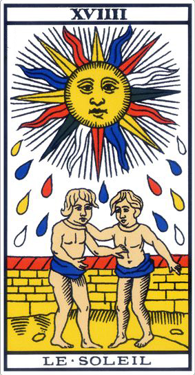
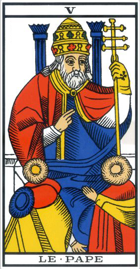

Votre rencontre avec le tarot
Que va vous apporter l'apprentissage du tarot ?
------------------------------->



Être initié à l’interprétation des 22 Arcanes Majeurs DU TAROT DE MARSEILLE
Le Tarot de Marseille est un langage et comme tout langage celui-ci s’apprend.
------------------------------->